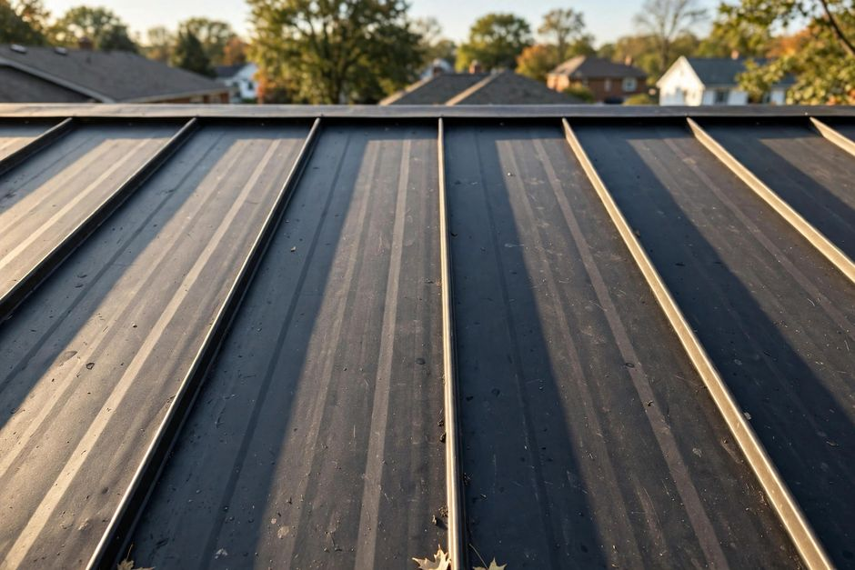
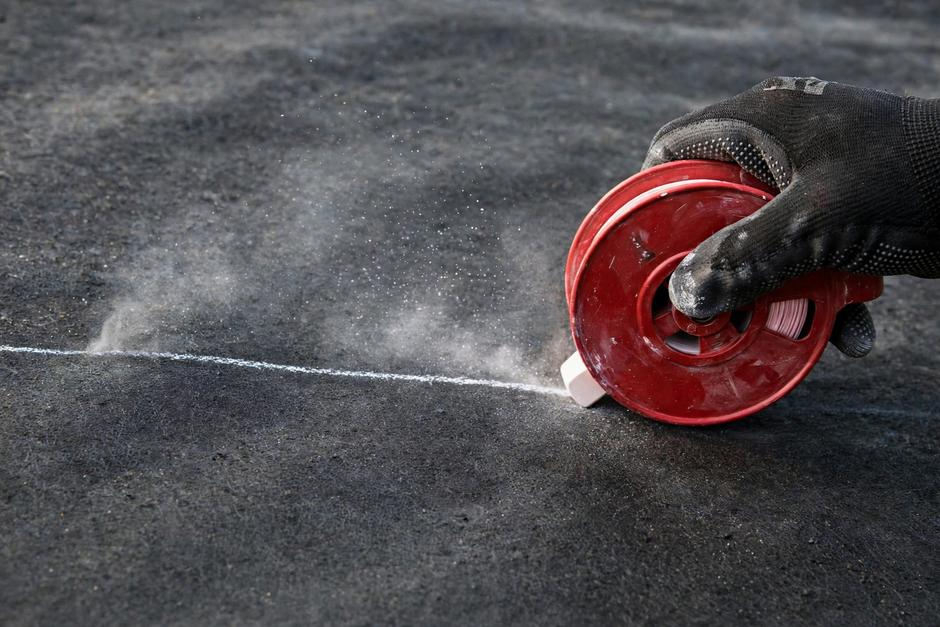
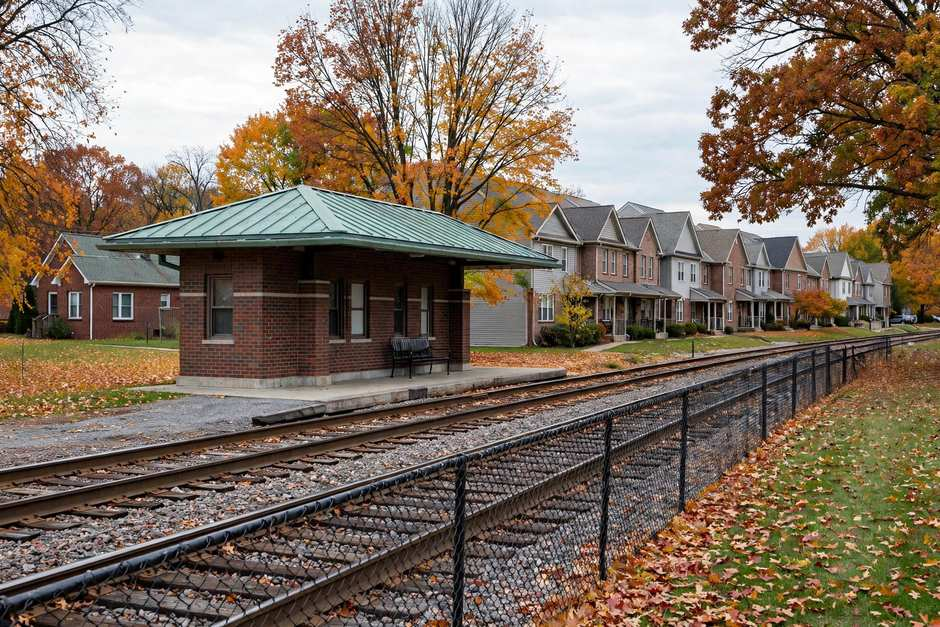
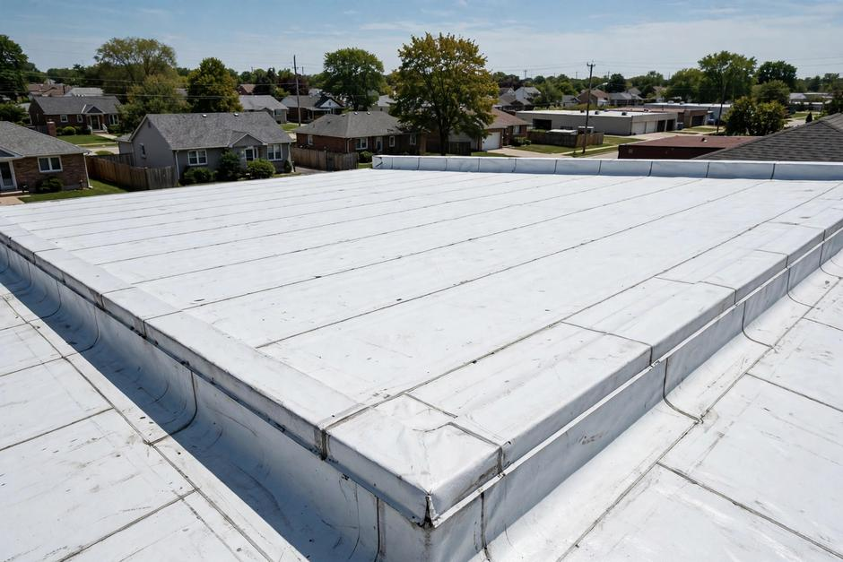
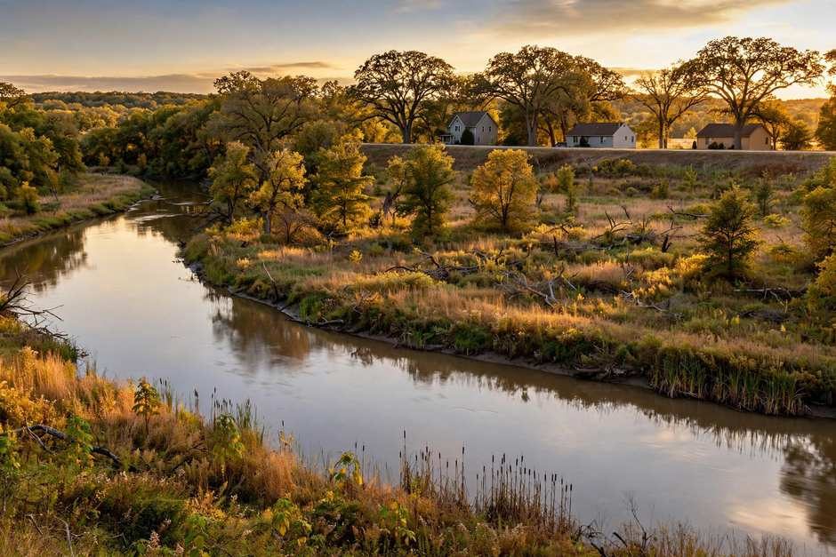
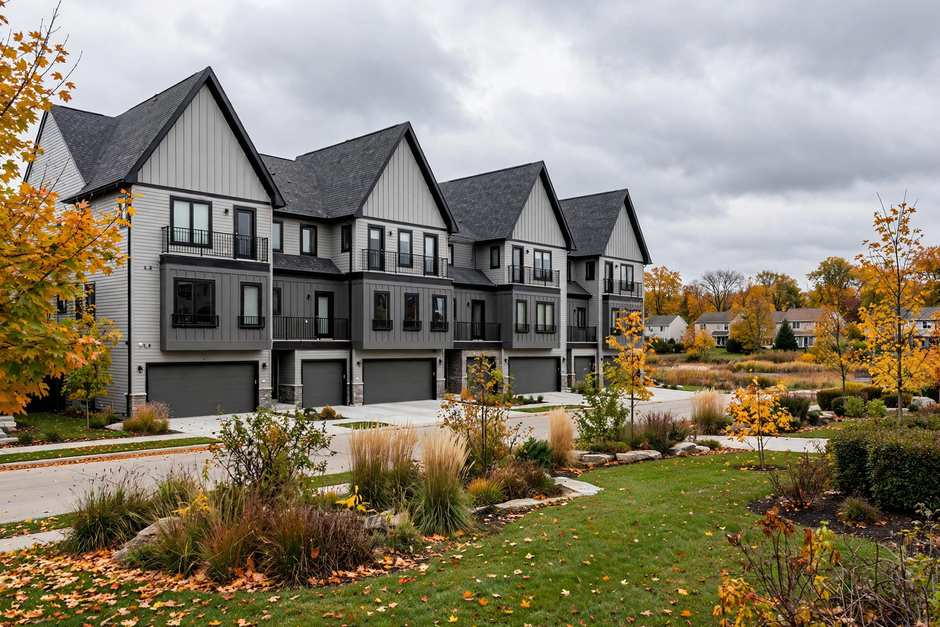

Curling, splitting and cracked shakes
Wood moves with moisture and temperature, and shakes curl, split and crack over time. Ask how the extent of the damage would be assessed and described in writing.
Cedar shake roofing Des Plaines IL homeowners ask about is a traditional, thick-profile wood roof with a distinctive look and a real maintenance burden in Illinois humidity. This page explains what cedar shakes are, what upkeep they need, how composite and synthetic alternatives compare, and what the local code position is on removing old shakes — with capability confirmed when you call (224) 802-4866.
Call (224) 802-4866 during business hours and describe what you are seeing. Hours: Mon–Tue 7:30 AM–7:00 PM, Wed–Fri 7:30 AM–7:30 PM, Sat 8:30 AM–5:00 PM, Sun closed.
Call Now (224) 802-4866 → No online booking. No email. Phone calls only.
A cedar shake is a thick, hand-split or resawn piece of wood, heavier and rougher than a shingle, laid with a wider exposure. That thickness gives cedar roofs their deep shadow lines and their weight, and it means the roof is installed differently from an asphalt roof — different fastening, different exposure, and different flashing details. Cedar is a natural material, so it weathers, curls, splits and grows moss in ways manufactured materials do not, and that behaviour is part of the decision, not a footnote to it.
In Illinois humidity and wet springs, cedar is high-maintenance: guides describe moss and rot treatment and regular attention as part of owning the roof, and guide lifespans vary from 25 to 40 years depending on the guide. No Des Plaines-specific cedar restriction was found in research, and this page claims neither that one exists nor that one does not — confirm any local or association question with the Building Division or the relevant association. Older homes in Downtown Des Plaines and Cumberland are the likeliest places to find existing cedar, and the roof replacement page sets out the wider replacement decision.
Cedar is chosen for its look and its tradition. It is kept for its maintenance. These are the topics to cover before deciding, including the composite comparison that belongs on this page.
Hand-split or resawn cedar, thicker than a shingle, with a wider exposure and a rougher face. Ask how the profile, exposure and fastening would be described in a written scope for your roof.
Guides describe cedar as high-maintenance in Illinois humidity and wet springs, with moss and rot treatment part of ownership. Ask what ongoing attention a cedar roof needs and whether that attention is within scope when you call.
Guide lifespans vary: 25–35 years in one guide, 30–40 in others, and 30–50 in one more. This page cites 25–40 years as the common spread. These are guide figures, never promises.
Composite shake and synthetic cedar imitate the look in manufactured materials. This page compares them in general terms only — no product line, brand, rating or lifespan is claimed for any composite product.
The City of Des Plaines Roof Guide requires existing wood-shake coverings to be removed, not overlaid. Ask how removal and disposal would be described in the written scope, and confirm current requirements with the Building Division.
Curling, splitting and cracked shakes, and leaks at flashing, are the common topics. This page makes no capability claim for cedar repair, grade or treatment products — confirm scope when you call.
Call (224) 802-4866 and describe the existing roof — cedar, composite, or a roof you are considering changing to cedar — and what you are seeing. Ask whether cedar work is within scope and what the next step would be.
The shakes, flashing, valleys and ridge are looked at, along with signs of moss, rot, curling and splitting. Ask what the visit covers and how findings are shared with you.
Ask for findings and an estimate in writing, including whether removal of existing shakes is in the scope, how the composite comparison was weighed, and anything that would change the scope. Compare guide cost ranges on this page — they are not this business's prices.
Confirm the material, the removal scope, the flashing and ventilation details, and what is included and excluded, in writing. No grade, treatment product or fire rating is claimed on this page.
Ask how the finished work is checked, what maintenance guidance you receive, and what records you keep. Keep the written findings and estimate with the photographs.
This section compares cedar with composite and synthetic shake in general terms. It is education, not a product recommendation, and no brand or product line is named.
Thick profile, deep shadow lines, and a surface that silvers and weathers over time. The look is the main reason cedar is chosen, and weathering is part of it.
High-maintenance in Illinois humidity and wet springs. Moss, rot treatment and attention to curling and splitting are recurring topics in general guidance.
Guides vary from 25 to 40 years in the common spread, with one guide reaching 30–50 years. Attributed guide figures only, never promises.
Manufactured materials shaped to imitate shake or slate. General guidance discusses them as lower-maintenance alternatives; no lifespan or rating is claimed here for any product.
No brand authorisation, no product line, no fire rating and no Class 4 claim appears on this page. If a composite product is under discussion, ask for its details in writing.
Cedar is heavier than asphalt, and any change of material raises a question about what the structure carries. Ask how that question is handled before a material is chosen.
Existing wood-shake coverings must be removed, not overlaid, under the City Roof Guide. That removal is part of the scope conversation for any cedar replacement.
Shakes are curling and splitting, moss is established, and leaks appear at flashing. The roof is near the end of the guide lifespan spread.
Ask whether repair or replacement is the sensible conversation, how removal would be scoped, and how cedar compares with composite for that house.
The homeowner likes the cedar look but not the upkeep, and wants to understand composite and synthetic options before deciding.
Ask for the comparison in general terms, with no brand or rating claimed, and for the reasoning to be put in writing with the estimate.
Wind and hail have lifted and cracked shakes, and the question is what is damaged, what is cosmetic, and what the documentation shows.
Photograph damage promptly, ask how findings are documented, and see the storm damage roof repair page for the wider storm process.
These are the problems general guidance associates with cedar roofs. They are described here so you can recognise them and ask about them.
Ask a pro →Wood moves with moisture and temperature, and shakes curl, split and crack over time. Ask how the extent of the damage would be assessed and described in writing.
Flashing is a leak point on any roof, and cedar's thickness and movement make the details matter. Ask how flashing would be checked.
Illinois humidity and wet springs encourage moss growth and rot on wood roofs. Guides treat treatment and attention as part of ownership; no treatment product is claimed here.
Ice dams are driven by attic heat as much as by the roof covering. See the attic ventilation page for the mechanism, and the roof repair page for the wider repair decision.
“I recently had the pleasure of working with WP Exterior for my roofing needs, and I must say, I couldn't be more satisfied with the outcome. From the moment I contacted them, it was evident that they truly value their customers. …”
Filip Libera2 years ago · Google review · Verbatim excerpt
✓ Google review“I use WP Exteriors to repaint my roof and do as some tuckpointing on the exterior of my building. Pat and his team were very professional and communicative. They did a good job explaining what needs to be done to my home immediately and what I can plan for in the future. I will definitely be using them in the future.”
Patricia Murray2 months ago · Google review
✓ Google review“Patryk was great to work with and extremely professional. I highly recommend WP exteriors and plan on using them again in the future!”
Brian Avila Gaona5 months ago · Roof inspection · Google review
✓ Google reviewGuide lifespans vary: 25 to 35 years in one guide, 30 to 40 years in others, and 30 to 50 years in one more, giving a common spread of 25 to 40 years. These are attributed guide figures, never promises. Maintenance, exposure and installation details all affect where a roof falls in that range.
Third-party guides only, and not this business's prices: XL (2026) gives $9.00 to $15.50 per square foot installed, and Modernize (August 2026) gives $9 to $16 per square foot. Guides conflict sharply, including within single companies, so no single range is the cost. Ask for a written estimate for your roof.
No, under the City of Des Plaines Roof Guide, existing wood-shake coverings must be removed, not overlaid. Ask how removal and disposal are described in the written scope, and confirm current requirements with the Building Division.
Composite and synthetic shake are manufactured materials shaped to imitate cedar. General guidance discusses them as lower-maintenance alternatives to natural wood. No brand, product line, rating or lifespan is claimed for any composite product on this page, and any product under discussion should be described in writing.
 Metal RoofingStanding seam and exposed-fastener systems, climate fit, and attributed guide lifespans and costs.Explore →
Metal RoofingStanding seam and exposed-fastener systems, climate fit, and attributed guide lifespans and costs.Explore →
Roof ReplacementFull tear-off and replacement, the code and climate angles for Des Plaines, and how repair and replacement compare.Explore → Roof RepairLeak repair, flashing and the repair-or-replace decision, explained for Des Plaines roofs.Explore →
Roof RepairLeak repair, flashing and the repair-or-replace decision, explained for Des Plaines roofs.Explore →
Roof InspectionWhat an inspection covers, when one matters locally, and how findings are shared in writing.Explore →
Flat Roof RepairLow-slope systems, seams, ponding and tie-ins, with repair-or-replace questions to ask.Explore →
Emergency Roof RepairActive leaks and storm breaches: what stabilisation means, safety while waiting, and honest scope limits.Explore →Storm Damage Roof RepairHail and wind damage in one place: mechanisms, documentation, and the lawful contractor role.Explore →
Insurance Claim HelpThe insurance claim process in general, lawful terms: roles, documentation and Illinois rules.Explore →Call (224) 802-4866 during business hours to talk about cedar or composite roofing and ask what scope is available. Hours: Mon–Tue 7:30 AM–7:00 PM, Wed–Fri 7:30 AM–7:30 PM, Sat 8:30 AM–5:00 PM, Sun closed.
Call (224) 802-4866 →Call (224) 802-4866 to talk about your roof. Describe what you are seeing — a leak, a stain, damage after a storm — and ask what help is available and what the next step would be. There is no online booking and no email contact. Hours: Mon–Tue 7:30 AM–7:00 PM, Wed–Fri 7:30 AM–7:30 PM, Sat 8:30 AM–5:00 PM, Sun closed. The office is at 638 Birchwood Ave, Des Plaines, IL 60018.